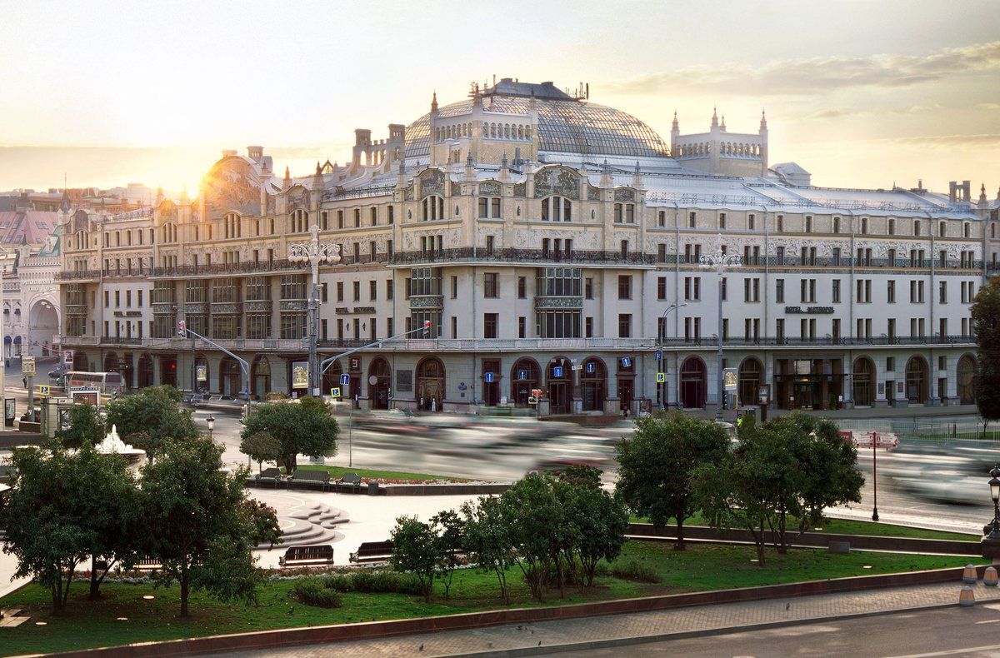

Метраполь

«Метрополь» – старейшая из сохранившихся действующих гостиниц в России. Принято считать, что ее история начинается в 1899 году, когда широко известный в те времена промышленник и меценат Савва Мамонтов объявляет о начале строительства. «Метрополь» открывает свои двери для постояльцев в 1905-м. Этот год и становится официальной датой рождения гостиницы. Однако на самом деле история одного из самых роскошных отелей в стране уходит своими корнями в далекие 1830-е годы. Именно тогда на месте сегодняшнего «Метрополя» появилась небольшая трехэтажная гостиница.